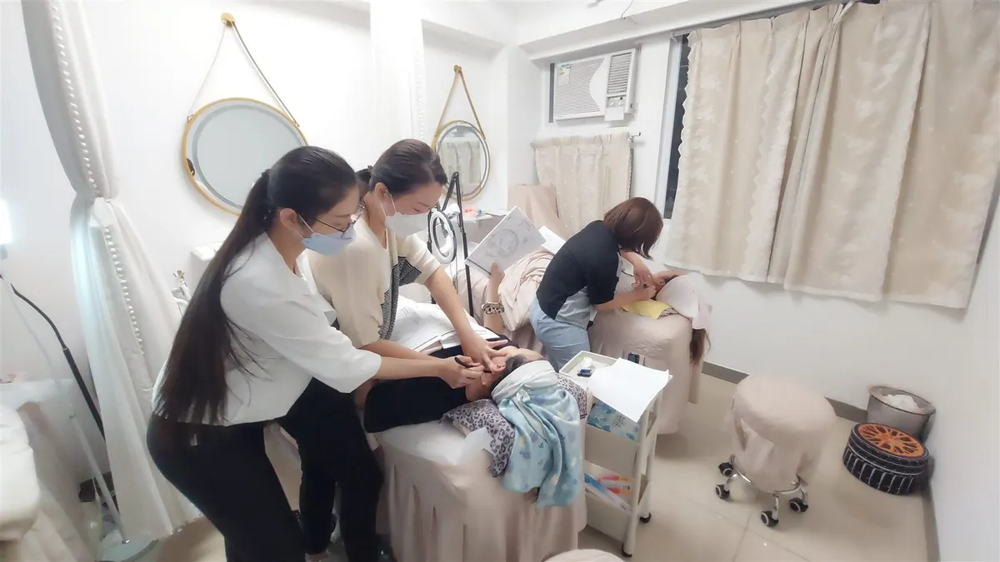

The Bojin Journal · Brows & Forehead
Why frown lines can deepen faster around menopause

It usually isn't that you suddenly started frowning more. Around this stage of life, skin between the brows gets thinner and drier, so the vertical lines that were always there show up more. On top of that, most of us hold quiet tension right there, and squint without noticing. A careful, well-placed few minutes can help that spot look softer and more relaxed. It won't erase the lines, and it isn't a fix for anything happening under the skin. But it can make a real, everyday difference in how rested you look back at yourself.
Wondering why the Remember: this is a gentle, supported self-care observation you can test on one side of your face—never a forceful press or medical treatment.
Why do my frown lines look deeper now?
Two things are happening at once. First, the skin here is changing. Around menopause it tends to get thinner and drier and loses some of its natural spring, so a crease that used to smooth out on its own now lingers a little longer. The line was often there for years; it's more visible now, and that's normal.
Second, this is where so many of us carry stress. Think of how your brows pull together when you concentrate, worry, or read something small without your glasses. Held for hours, day after day, that little knit becomes a habit the muscle keeps repeating even when you feel calm.
So the deeper look between your brows is two stories overlapping: skin that shows more, and a muscle that's holding on. Neither is your fault, and neither means you did anything wrong. It's usually one piece of a bigger shift, too: see why your whole face feels different in perimenopause for the full picture.
How the Bojin Method helps this spot
First, what bojin is. If you already know gua sha, you have a head start: bojin grew from the same family of Chinese hands-on face care, so it will feel familiar. It's still its own deliberate method. What makes it work is three things: the order you work in, the angle you hold the tool, and the exact spot you're working.
The traditional tool is a bojin stick, a slim, polished stainless steel tool shaped to follow the face, and you use its rounded edge. You can start with clean fingertips, or a smooth-edged tool you already own, while you learn the moves, but the stick is what the method was built around. The pressure is not a barely-there touch, and it isn't forceful either. It's the right, comfortable pressure for you, firm enough to be felt, never enough to hurt or drag the skin.
For the brow area, the aim is simple and honest: help that knitted muscle let go and coax a little settled fluid to move on. Most of us were handed a tool with no method attached, no one showed us the order to follow, the angle to hold, or the exact place to work. Add that method, and the same few minutes feel different.
Between your brows, comfortable pressure matters more than pressing hard or barely touching. Hold the right angle, work in the right order, and work the right spot. That order, angle, and placement is the method.

The 5-minute between-the-brows reset
Use the rounded edge of your bojin stick, or clean fingertips while you learn. Add a little oil or cream first so nothing drags or tugs. Work in order, follow the angle described, and use the right comfortable pressure, firm enough to feel but never enough to hurt. This is gentle self-care, not medical treatment, so keep it easy and stop if anything stings.

Warm and settle the area
Rest two fingertips flat between your brows and take three slow breaths, letting your forehead go heavy. This softens the skin and tells the muscle it's safe to loosen before you begin.
Read your face first
Notice where the knit feels tightest, usually one side pulls more than the other. Start on the tighter side so your order follows what your face needs, not a fixed routine.
Ease the knot open
With the rounded edge held almost flat against the skin, glide slowly from the inner brow upward and outward, right above the crease. Keep the angle low and the pressure comfortable, repeating a few unhurried passes on each side.
Smooth up the center line
Place the edge at the top of the vertical lines and draw gently upward toward the hairline, letting the angle lift rather than press in. This encourages the held tension and any puffiness to release instead of gathering in one spot.
Finish down the sides of your neck
This is the step people skip. Sweep gently down the sides of your neck a few times so the fluid you moved has a clear path to travel and settle. Skip it, and the area can feel stuck.
What can I expect?
Done regularly, most women notice the area looks a little softer, calmer, and less pinched, especially first thing in the morning or after a tense day. The forehead can feel more relaxed, puffiness can look reduced, and many people say they look more rested and a touch more lifted. Those are the everyday wins, small, real, and worth a few minutes.
Now the honest limits. This won't remove the lines between your brows or change the thinning of the skin, and it isn't a treatment or a substitute for anything a doctor offers. Results are gentle and everyday, not lasting changes to your face. If a line appears suddenly on one side, if the area is painful, or if anything looks or feels off, please see your doctor rather than waiting.
Give it a fair, gentle try for a couple of weeks and judge it by how the area feels, not by the mirror alone. A softer, more relaxed brow is a quiet, honest win, and it's yours to keep with a few calm minutes.
Quick answers
Can I use a gua sha stone instead of a bojin stick?
You can start with a gua sha stone or clean fingertips while you learn the moves. A bojin stick is the traditional tool the method was built around, with a rounded edge shaped to follow the face. The real difference is working in the right order, at the right angle and spot, with comfortable pressure, not the object in your hand.
How hard should I press between my brows?
Firm enough to feel it, never enough to hurt or drag the skin. Too light does nothing, and too hard is wrong. Aim for the pressure you can comfortably take, and let the angle and placement carry the work rather than force.
How often should I do this to see anything?
A few minutes most days works better than one long session now and then. Many women notice the area looking softer and more rested within a couple of weeks. Keep it gentle and consistent, and remember the results are everyday, not lasting.
Will this get rid of my frown lines?
No, and I want to be straight with you about that. This can help the area look softer and more relaxed by easing the brow-knit habit and moving puffiness, but it won't erase the lines or change thinning skin. It's soothing self-care, not a treatment. For more than that, talk with a doctor.
See the between-the-brows reset in real time
Watching it once makes everything click. My free 3-minute video walks you through this brow reset step by step, showing the order to follow, the angle to hold, and exactly where to work, so you can feel the right comfortable pressure for yourself. Come try it with me.
Watch the free 3-min videoYu-Ting Lan is a Taiwan-based international bojin instructor and the founder of Héhé Studio. She has taught her bojin method to more than a thousand students, from complete beginners to grandmothers, across Taiwan, Hong Kong, and Malaysia.